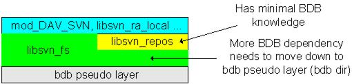
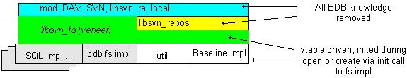

Current View
Below is a simplified view of the existing Subversion FS layers and those
layers directly affected by it.

As noted, BDB dependencies are located at various levels in the system.
To ease implementation of new FS back ends, I feel more BDB isolation
is required.
Please understand that I understand that all of this is open for debate or
public flogging as needed?
Summary of Changes
Below is a summary of out-of-repos changes made:
- All explicit references, to BDB structures in svn_fs_t have been removed and
replaced with a void reference to "FS type specific data".
- All functions containing Berkeley have been re-named. Except for
svn_fs_set_berkeley_errcall.
- Added a vtable located in svn_fs_t, to provide mechanism for FS
implementers to supplant implementations of most of the exposed
functions at the API level.
- Moved all BDB related code to BDB sub-dir.
- Created a trail vtable so that different DB APIs can back the trail.c code.
This file and his companion include has been moved to the util sub-directory
- Created a db access functions vtable for what I'm referring to as the baseline
FS implementation. This will allow for other DBs to be used to back the
current FS as it exists today. This may not be the best solution for a
SQL DB long term but will provide a jumping off point for enhanced versions
of a SQL FS. The end result can be a hybrid or a completely new FS at the
veneer level.
- Renamed the BDB functions in the bdb directory with a new prefix: svn_fs__bdb
- Added svn_config_t parameter to the create calls. This will allow
configuration parameters specific to the FS implementation to be passed in.
I will Explain this in a soon to come document on a SQL FS.
Summary of Planned Changes
Below are plans for coming changes:
- Move tree.c, dag.c and their partners to baseline_impl directory. Look for and
move util candidates.
- Commit some existing config.c extensions.
- Commit a reworked svn_sql_config container class that is more generic.
- Build and commit a fs_loader module which utilizes the config container class.
- Continue SQL work "On a branch hopefully?".
Final View
The end result should be more like this:
